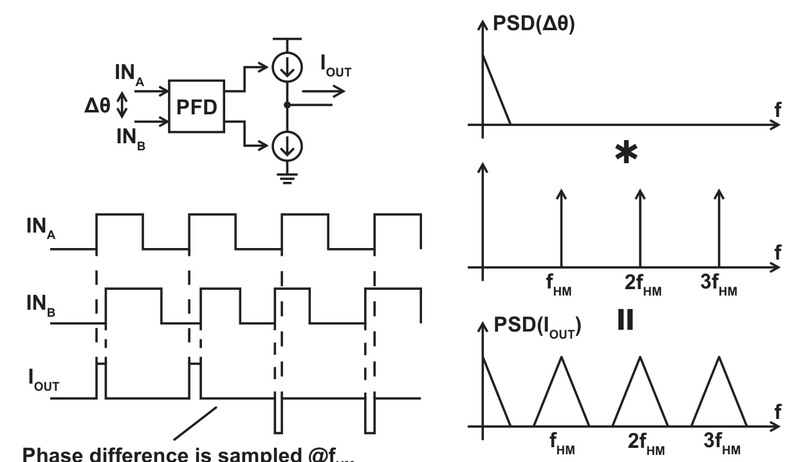
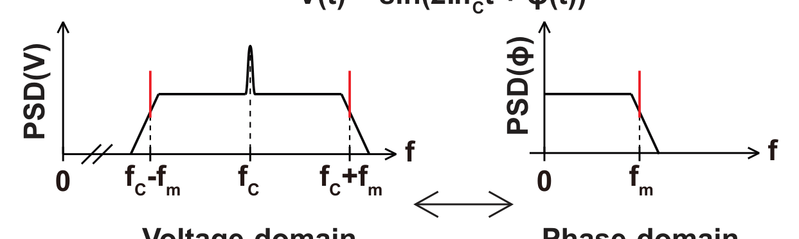
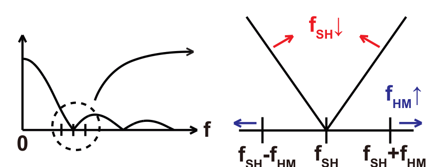
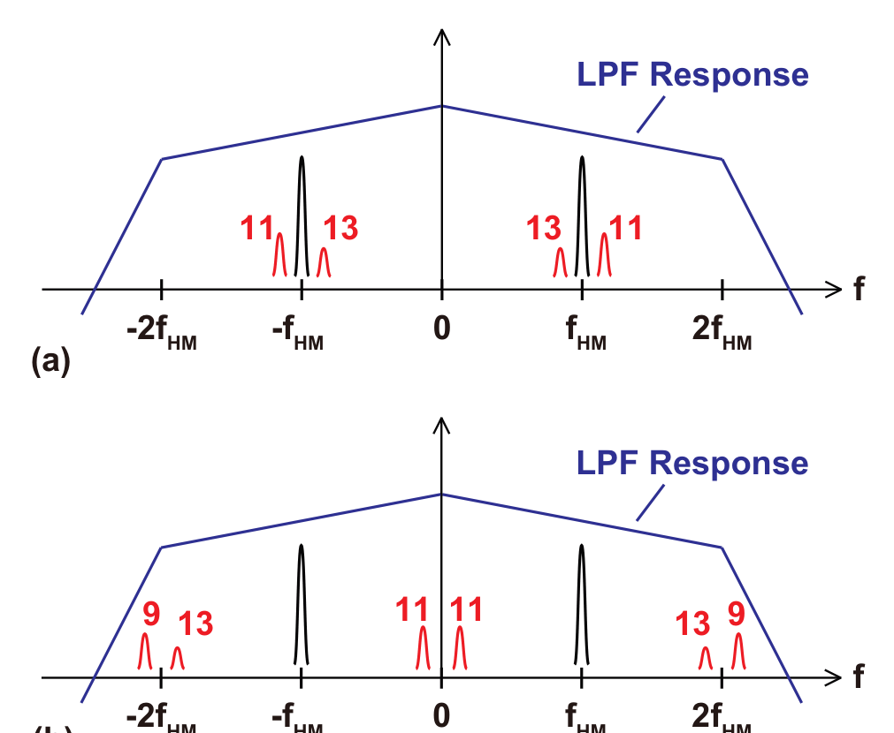
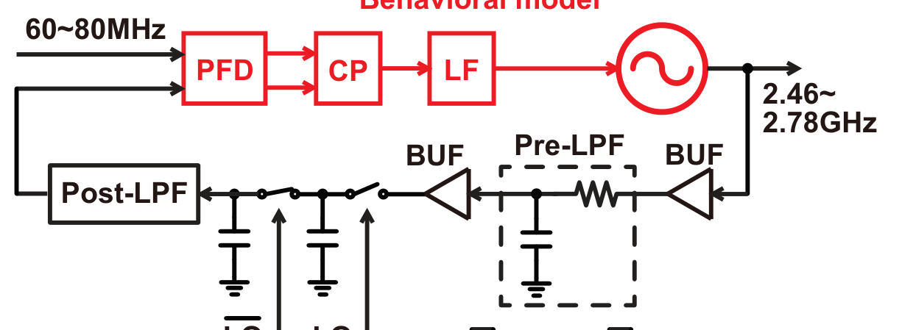

4.2 背景理論
4.2.1 PFD/CP の位相サンプリング動作

本文 Fig. 4.2：PFD/CPは立ち上がりエッジでのみ動作＝位相差にインパルス列（$f_\text{HM}$）を掛ける＝スペクトルが $f_\text{HM}$ 間隔でコピー。
- PFD/CP は位相差を連続的に出すのではなく、入力の立ち上がりエッジでのみ動作。CPの電流パルスは1基準周期よりずっと狭い → PFD/CP は「真の（連続時間の）入力位相差」に周波数 $f_\text{HM}$（＝PD入力周波数＝HM出力周波数）のインパルス列を掛けるブロックとみなせる。
- 周波数領域：入力位相差スペクトルが $f_\text{HM}$ 間隔のインパルス列と畳み込まれ、$f_\text{HM}$ とその高調波にコピーが現れる。
- 入力位相差に高周波成分が無く帯域が狭ければ問題ないが、HM出力は LO 周波数（$\gg f_\text{HM}$）付近の位相成分を含むので、この折り返しが効いてくる。XOR PD や SPD も離散時間動作なので同様。
4.2.2 信号スペクトルとその位相スペクトルの関係

本文 Fig. 4.3：信号スペクトル＝PNスペクトルを搬送波の両側にコピーしたもの。電圧領域↔位相領域の変換に使う。$V(t)=A\sin(\omega_c t+\phi_n(t))$、$|\phi_n|\ll1$ とすると
$$V(t)\approx A[\sin(\omega_c t)+\phi_n(t)\cos(\omega_c t)]$$
$\phi_n(t)=A_n\sin(\omega_n t)$ の1成分に注目すると
$$V(t)\approx A\sin(\omega_c t)+\frac{A A_n}{2}\big[\sin((\omega_c+\omega_n)t)-\sin((\omega_c-\omega_n)t)\big]$$
→ 信号スペクトル ＝ PNスペクトルを搬送波の両側にコピーしたもの（Fig. 4.3）。HMの動作は電圧領域で解析するが、PLL全体はHM出力を過剰位相（excessive phase）で扱うので、この両者を行き来する変換が必要。
4.4 スパーの位置と振幅の解析
4.4.1 位置
Type-A も Type-B も 同じ周波数に出る：
$$\Delta f=|f_\text{SH}-l\,f_\text{HM}|,\qquad \left(l-\tfrac12\right)f_\text{HM}
＝$f_\text{SH}$ と、それに最も近い $f_\text{HM}$ の整数倍との差。$f_\text{SH}$ が $f_\text{HM}$ の整数倍にごく近いとスパーは低周波に出て PLL の LPF で落ちない。高調波（$2\Delta f$, $3\Delta f$…）も出るが基本波より小さい。
4.4.2 Type-A の振幅

本文 Fig. 4.7：sincのノッチ拡大図。$f_\text{SH}$↓・$f_\text{HM}$↑ でトーンがノッチから遠く・sincが急峻になり減衰が浅い。陰的 sinc 関数 $F_\text{SINC}(f,f_\text{SH})\equiv\dfrac{\sin(\pi f/f_\text{SH})}{\pi f/f_\text{SH}}$ を定義。
$$U_A[\text{dBc}]=10\log\!\left[\frac{|H_\text{PLL,cl}(\Delta f)|^2\big(F_\text{SINC}^2(f_\text{HM}-f_\text{SH},f_\text{SH})+F_\text{SINC}^2(f_\text{HM}+f_\text{SH},f_\text{SH})\big)}{2\,F_\text{SINC}^2(f_\text{HM},f_\text{SH})}\right]$$
- $\pm(f_\text{SH}-f_\text{HM})$ と $\pm(f_\text{SH}+f_\text{HM})$ はノッチから等距離なので減衰はほぼ同じ → 平均で近似し、搬送波の減衰 $F_\text{SINC}^2(f_\text{HM},f_\text{SH})$ で規格化。$|H_\text{PLL,cl}(\Delta f)|$ はHMベースPLLの閉ループ伝達関数。
- Type-A が最大：$f_\text{SH}$ 最小・$f_\text{HM}$ 最大（トーンがノッチから遠い＋sincが急峻）・$f_\text{SH}$ が $f_\text{HM}$ の整数倍に近い・$\Delta f$ が小さい。→ 最悪値 $U_{A,\text{max}}$（式4.8）。
4.4.3 Type-B の振幅

本文 Fig. 4.8：HM出力の概念スペクトル。(a)$f_\text{SH}\approx$偶数倍 $f_\text{HM}$、(b)奇数倍。矩形波の奇数次高調波の扱いが変わる。sinc の影響は小さいが、S/H入力の高調波組成と post-LPF に依存。矩形波（奇数次高調波のみ）を例に：
- $f_\text{SH}\approx2m\,f_\text{HM}$（偶数倍）：$2m-1$ 次と $2m+1$ 次が搬送波の両側に等距離・ほぼ同振幅。フーリエ級数で $2m+1$ 次の振幅は $1/(2m+1)$。
$$U_B[\text{dBc}]=10\log\!\left[\frac{(2m-1)^{-2}+(2m+1)^{-2}}{2}\right]$$
- $f_\text{SH}\approx(2m+1)f_\text{HM}$（奇数倍）：$2m+1$ 次が DC 近く、$2m-1$・$2m+3$ 次が $2f_\text{HM}$ 近く（post-LPF で抑圧）→ 片側だけになる。近似：片側トーンが両側に半分のパワーで出るとみなす。
$$U_B[\text{dBc}]=10\log\!\left[\frac{(2m+1)^{-2}}{2\,|H_\text{post,LPF}(j2\pi f_\text{HM})|^2}\right]$$
4.4.4 挙動シミュレーション（検証）
- Type-A 検証（Fig. 4.9）：VCO 正弦波（高調波なし）→ Type-A のみ観測。$R=10.5$ kΩ, $C_1=45.6$ pF, $C_2=5.07$ pF, $I_\text{CP}=20$ µA, $K_\text{VCO}=30$ Mrad/V, 帯域1MHz。$f_\text{SH}=800.1$ MHz, $f_\text{HM}=100$ MHz ($f_\text{SH}\approx8f_\text{HM}$) → スパー $\Delta f=100$ kHz とその倍数。式4.7とよく一致。
- 依存性（Fig. 4.11）：スパーは $f_\text{HM}$↑（ノッチから遠い）で大、$f_\text{SH}$↓（ノッチ付近の sinc が急峻）で大 → 予測通り。
- post-LPF効果（Fig. 4.12–13）：1次LPF 帯域100MHz → $f_\text{HM}$ で −3 dB, $f_\text{SH}$ で −21 dB ＝ 相対18 dB → スパー −17.86 − 18 ≈ −35.86 dBc（sim一致）。
- Type-B 検証（Fig. 4.14–16）：VCO 矩形波＋Type-A抑圧用に4次LPF（帯域$2f_\text{HM}$）。偶数ケースは式4.9とよく一致、奇数ケースは約1 dB小さめ（$2f_\text{HM}$付近の高調波を無視した＋片側近似のため。前者を入れると+0.26 dB補正）。実用上 1 dB 誤差は問題なし。
- pre-LPF効果（Fig. 4.17–18）：$f_\text{SH}\approx8f_\text{HM}$ なので 7・9次が搬送波近くへ落ちる。1次LPF 帯域2.5GHz → $f_\text{OUT}$ で −3 dB, 7/9次で −17/−19 dB ＝ 相対15 dB。
4.6 LPF設計ケーススタディ（回路レベル）
HM設計フロー：①最悪ケース周波数設定を確定 → ②pre/post LPF無しでHMを作り、1段目サンプラの帯域・S/H入力の高調波レベル・クロックデューティから必要なフィルタ量を計算 → ③pre/post LPF を設計 → ④挿入して HM 動作・最終オフセットスパーをシミュ確認。
最悪ケース：$f_\text{SH}$ が最小値付近・$f_\text{HM}$ が最大値付近・$f_\text{SH}$ が $f_\text{HM}$ の整数倍に近い・$\Delta f$ が PLL帯域より十分低い。Type-B の高調波組成は次数が上がるほど小さくなるので、最悪ケースは Type-A と同じとみなせる。
具体例（Fig. 4.22）

本文 Fig. 4.22：設計フロー実証のモデル。HM（S/H＋pre/post LPF）は回路レベル、他はビヘイビア。HM（S/H＋pre/post LPF）は回路レベル、他はビヘイビアモデル。帯域2MHz、PFD/CP入力60–80MHz、HM LO 800–900MHz（デューティ $D=0.125$）、$k=3$、1段目S/HのRC帯域380MHz、出力2.46–2.78GHz（正弦波、高調波はHM入力バッファ由来）、65nm。
最悪ケース $f_\text{SH}=800.5$ MHz, $f_\text{HM}=80$ MHz。目標オフセットスパー −60 dBc → Type-A/Bを個別に −66 dBc 以下に。
Type-A：post-LPF無しの減衰（sinc＋$D/(2\pi RC)$ の LPF）≈ −31 dB → post-LPF で $f_\text{SH}$ に追加35 dB必要。
Type-B：$f_\text{SH}\approx10f_\text{HM}$ なので9・11次が $f_\text{HM}$ 近くへ。9次の相対パワー ≈ −41 dBc、S/H前の等価sincで ≈19 dB減衰 → Type-B ≈ −60 dBc（フィルタ無しでも）→ pre-LPF は最低6 dB追加でよい。
結果（Fig. 4.26）：オフセットスパーは 500 kHz とその倍数に出て、目標 −60 dBc を大きく下回る（72 dB 抑圧）。
pre-LPF の位置：2つの分離バッファの間が実用的（S/H が見る出力インピーダンスを変えずにバッファ発生の高調波を抑える）。VCO出力自体に大きな高調波があるなら（リングVCO等）バッファ前でもよい。